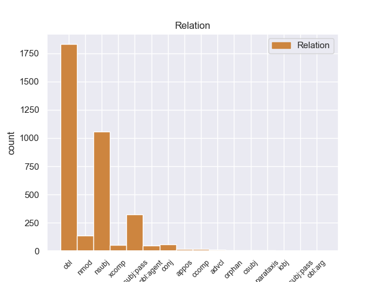
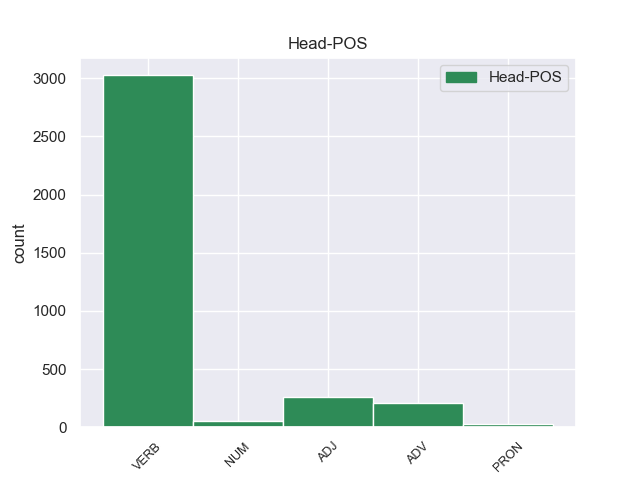
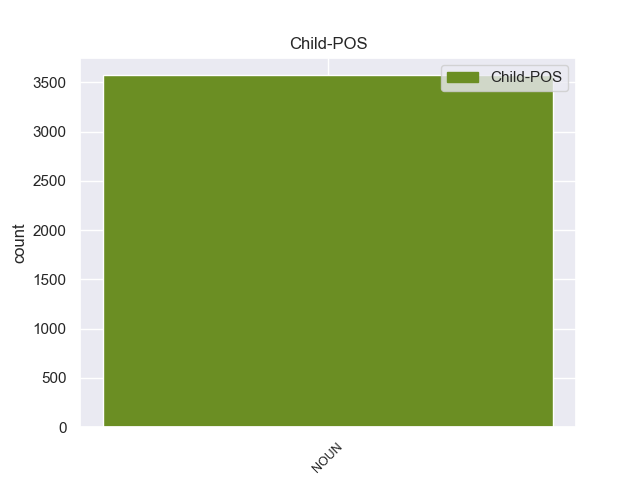

Distribution of features within this leaf



Morphosyntax Rules sorted by frequency.
- When the dependent token is the oblique nominal(obl) of the head token, and the head token is VERB and the dependent token is NOUN, the Gender needs to be Fem.
1 Αυτό _ _ _ _ 0 _ _ _
2 μπορεί _ _ _ _ 0 _ _ _
3 να _ _ _ _ 0 _ _ _
4 μην _ _ _ _ 0 _ _ _
5 οδηγήσει οδηγώ VERB VERB Aspect=Perf|Mood=Ind|Number=Sing|Person=3|VerbForm=Fin|Voice=Act 0 _ _ _
6 σ _ _ _ _ 0 _ _ _
7 τη _ _ _ _ 0 _ _ _
8 λήξη λήξη NOUN NOUN Case=Acc|Gender=Fem|Number=Sing 5 obl _ _
9 του _ _ _ _ 0 _ _ _
10 εν _ _ _ _ 0 _ _ _
11 λόγω _ _ _ _ 0 _ _ _
12 ζητήματος _ _ _ _ 0 _ _ _
13 αλλά _ _ _ _ 0 _ _ _
14 , _ _ _ _ 0 _ _ _
15 σ _ _ _ _ 0 _ _ _
16 τη _ _ _ _ 0 _ _ _
17 μορφή _ _ _ _ 0 _ _ _
18 υπό _ _ _ _ 0 _ _ _
19 την _ _ _ _ 0 _ _ _
20 οποία _ _ _ _ 0 _ _ _
21 την _ _ _ _ 0 _ _ _
22 λάβαμε _ _ _ _ 0 _ _ _
23 , _ _ _ _ 0 _ _ _
24 αυτή _ _ _ _ 0 _ _ _
25 η _ _ _ _ 0 _ _ _
26 αίτηση _ _ _ _ 0 _ _ _
27 άρσης _ _ _ _ 0 _ _ _
28 της _ _ _ _ 0 _ _ _
29 ασυλίας _ _ _ _ 0 _ _ _
30 ήταν _ _ _ _ 0 _ _ _
31 , _ _ _ _ 0 _ _ _
32 κατά _ _ _ _ 0 _ _ _
33 την _ _ _ _ 0 _ _ _
34 άποψη _ _ _ _ 0 _ _ _
35 της _ _ _ _ 0 _ _ _
36 Επιτροπής _ _ _ _ 0 _ _ _
37 Νομικών _ _ _ _ 0 _ _ _
38 Θεμάτων _ _ _ _ 0 _ _ _
39 , _ _ _ _ 0 _ _ _
40 απαράδεκτη _ _ _ _ 0 _ _ _
41 , _ _ _ _ 0 _ _ _
42 άποψη _ _ _ _ 0 _ _ _
43 την _ _ _ _ 0 _ _ _
44 οποία _ _ _ _ 0 _ _ _
45 συνιστώ _ _ _ _ 0 _ _ _
46 σ _ _ _ _ 0 _ _ _
47 το _ _ _ _ 0 _ _ _
48 Σώμα _ _ _ _ 0 _ _ _
49 να _ _ _ _ 0 _ _ _
50 υιοθετήσει _ _ _ _ 0 _ _ _
51 . _ _ _ _ 0 _ _ _
1 Υπ' _ _ _ _ 0 _ _ _
2 αυτές _ _ _ _ 0 _ _ _
3 τις _ _ _ _ 0 _ _ _
4 συνθήκες _ _ _ _ 0 _ _ _
5 , _ _ _ _ 0 _ _ _
6 η _ _ _ _ 0 _ _ _
7 Επιτροπή επιτροπή NOUN NOUN Case=Nom|Gender=Fem|Number=Sing 18 nsubj _ _
8 Νομικών _ _ _ _ 0 _ _ _
9 Θεμάτων _ _ _ _ 0 _ _ _
10 , _ _ _ _ 0 _ _ _
11 της _ _ _ _ 0 _ _ _
12 οποίας _ _ _ _ 0 _ _ _
13 τη _ _ _ _ 0 _ _ _
14 θέση _ _ _ _ 0 _ _ _
15 αποδέχομαι _ _ _ _ 0 _ _ _
16 πλήρως _ _ _ _ 0 _ _ _
17 , _ _ _ _ 0 _ _ _
18 προτείνει προτείνω VERB VERB Aspect=Imp|Mood=Ind|Number=Sing|Person=3|Tense=Pres|VerbForm=Fin|Voice=Act 0 _ _ _
19 την _ _ _ _ 0 _ _ _
20 απόρριψη _ _ _ _ 0 _ _ _
21 της _ _ _ _ 0 _ _ _
22 αίτησης _ _ _ _ 0 _ _ _
23 άρσης _ _ _ _ 0 _ _ _
24 της _ _ _ _ 0 _ _ _
25 βουλευτικής _ _ _ _ 0 _ _ _
26 ασυλίας _ _ _ _ 0 _ _ _
27 την _ _ _ _ 0 _ _ _
28 οποία _ _ _ _ 0 _ _ _
29 υπέβαλε _ _ _ _ 0 _ _ _
30 το _ _ _ _ 0 _ _ _
31 γαλλικό _ _ _ _ 0 _ _ _
32 Υπουργείο _ _ _ _ 0 _ _ _
33 Δικαιοσύνης _ _ _ _ 0 _ _ _
34 , _ _ _ _ 0 _ _ _
35 σ _ _ _ _ 0 _ _ _
36 τη _ _ _ _ 0 _ _ _
37 μορφή _ _ _ _ 0 _ _ _
38 υπό _ _ _ _ 0 _ _ _
39 την _ _ _ _ 0 _ _ _
40 οποία _ _ _ _ 0 _ _ _
41 υποβλήθηκε _ _ _ _ 0 _ _ _
42 σ _ _ _ _ 0 _ _ _
43 το _ _ _ _ 0 _ _ _
44 Κοινοβούλιο _ _ _ _ 0 _ _ _
45 . _ _ _ _ 0 _ _ _
1 Ευελπιστώ _ _ _ _ 0 _ _ _
2 ότι _ _ _ _ 0 _ _ _
3 η _ _ _ _ 0 _ _ _
4 απόφαση απόφαση NOUN NOUN Case=Nom|Gender=Fem|Number=Sing 17 nsubj:pass _ _
5 αυτή _ _ _ _ 0 _ _ _
6 , _ _ _ _ 0 _ _ _
7 συμπεριλαμβανομένης _ _ _ _ 0 _ _ _
8 και _ _ _ _ 0 _ _ _
9 της _ _ _ _ 0 _ _ _
10 αιτιολογικής _ _ _ _ 0 _ _ _
11 έκθεσης _ _ _ _ 0 _ _ _
12 που _ _ _ _ 0 _ _ _
13 την _ _ _ _ 0 _ _ _
14 συνοδεύει _ _ _ _ 0 _ _ _
15 , _ _ _ _ 0 _ _ _
16 θα _ _ _ _ 0 _ _ _
17 διαβιβαστεί διαβιβάζω VERB VERB Aspect=Perf|Mood=Ind|Number=Sing|Person=3|VerbForm=Fin|Voice=Pass 0 _ _ _
18 σ _ _ _ _ 0 _ _ _
19 τις _ _ _ _ 0 _ _ _
20 γαλλικές _ _ _ _ 0 _ _ _
21 αρχές _ _ _ _ 0 _ _ _
22 , _ _ _ _ 0 _ _ _
23 εφόσον _ _ _ _ 0 _ _ _
24 υπερψηφιστεί _ _ _ _ 0 _ _ _
25 από _ _ _ _ 0 _ _ _
26 το _ _ _ _ 0 _ _ _
27 Κοινοβούλιο _ _ _ _ 0 _ _ _
28 . _ _ _ _ 0 _ _ _
1 Υπάρχει _ _ _ _ 0 _ _ _
2 μια _ _ _ _ 0 _ _ _
3 άλλη _ _ _ _ 0 _ _ _
4 πλευρά _ _ _ _ 0 _ _ _
5 της _ _ _ _ 0 _ _ _
6 υπόθεσης _ _ _ _ 0 _ _ _
7 , _ _ _ _ 0 _ _ _
8 η _ _ _ _ 0 _ _ _
9 οποία _ _ _ _ 0 _ _ _
10 , _ _ _ _ 0 _ _ _
11 δυστυχώς _ _ _ _ 0 _ _ _
12 , _ _ _ _ 0 _ _ _
13 γεννά _ _ _ _ 0 _ _ _
14 την _ _ _ _ 0 _ _ _
15 υποψία _ _ _ _ 0 _ _ _
16 ότι _ _ _ _ 0 _ _ _
17 η _ _ _ _ 0 _ _ _
18 πρόνοια _ _ _ _ 0 _ _ _
19 σχετικά σχετικά ADV ADV _ 0 _ _ _
20 με _ _ _ _ 0 _ _ _
21 τις _ _ _ _ 0 _ _ _
22 προϋποθέσεις προϋπόθεση NOUN NOUN Case=Acc|Gender=Fem|Number=Plur 19 obl _ _
23 ελεύθερης _ _ _ _ 0 _ _ _
24 διεξαγωγής _ _ _ _ 0 _ _ _
25 του _ _ _ _ 0 _ _ _
26 κοινοβουλευτικού _ _ _ _ 0 _ _ _
27 έργου _ _ _ _ 0 _ _ _
28 δεν _ _ _ _ 0 _ _ _
29 απασχόλησε _ _ _ _ 0 _ _ _
30 επαρκώς _ _ _ _ 0 _ _ _
31 την _ _ _ _ 0 _ _ _
32 εισαγγελική _ _ _ _ 0 _ _ _
33 αρχή _ _ _ _ 0 _ _ _
34 : _ _ _ _ 0 _ _ _
1 Αυτό _ _ _ _ 0 _ _ _
2 μπορεί _ _ _ _ 0 _ _ _
3 να _ _ _ _ 0 _ _ _
4 μην _ _ _ _ 0 _ _ _
5 οδηγήσει _ _ _ _ 0 _ _ _
6 σ _ _ _ _ 0 _ _ _
7 τη _ _ _ _ 0 _ _ _
8 λήξη _ _ _ _ 0 _ _ _
9 του _ _ _ _ 0 _ _ _
10 εν _ _ _ _ 0 _ _ _
11 λόγω _ _ _ _ 0 _ _ _
12 ζητήματος _ _ _ _ 0 _ _ _
13 αλλά _ _ _ _ 0 _ _ _
14 , _ _ _ _ 0 _ _ _
15 σ _ _ _ _ 0 _ _ _
16 τη _ _ _ _ 0 _ _ _
17 μορφή _ _ _ _ 0 _ _ _
18 υπό _ _ _ _ 0 _ _ _
19 την _ _ _ _ 0 _ _ _
20 οποία _ _ _ _ 0 _ _ _
21 την _ _ _ _ 0 _ _ _
22 λάβαμε _ _ _ _ 0 _ _ _
23 , _ _ _ _ 0 _ _ _
24 αυτή _ _ _ _ 0 _ _ _
25 η _ _ _ _ 0 _ _ _
26 αίτηση αίτηση NOUN NOUN Case=Nom|Gender=Fem|Number=Sing 40 nsubj _ _
27 άρσης _ _ _ _ 0 _ _ _
28 της _ _ _ _ 0 _ _ _
29 ασυλίας _ _ _ _ 0 _ _ _
30 ήταν _ _ _ _ 0 _ _ _
31 , _ _ _ _ 0 _ _ _
32 κατά _ _ _ _ 0 _ _ _
33 την _ _ _ _ 0 _ _ _
34 άποψη _ _ _ _ 0 _ _ _
35 της _ _ _ _ 0 _ _ _
36 Επιτροπής _ _ _ _ 0 _ _ _
37 Νομικών _ _ _ _ 0 _ _ _
38 Θεμάτων _ _ _ _ 0 _ _ _
39 , _ _ _ _ 0 _ _ _
40 απαράδεκτη απαράδεκτος ADJ ADJ Case=Nom|Gender=Fem|Number=Sing 0 _ _ _
41 , _ _ _ _ 0 _ _ _
42 άποψη _ _ _ _ 0 _ _ _
43 την _ _ _ _ 0 _ _ _
44 οποία _ _ _ _ 0 _ _ _
45 συνιστώ _ _ _ _ 0 _ _ _
46 σ _ _ _ _ 0 _ _ _
47 το _ _ _ _ 0 _ _ _
48 Σώμα _ _ _ _ 0 _ _ _
49 να _ _ _ _ 0 _ _ _
50 υιοθετήσει _ _ _ _ 0 _ _ _
51 . _ _ _ _ 0 _ _ _
1 Όμως _ _ _ _ 0 _ _ _
2 , _ _ _ _ 0 _ _ _
3 ο _ _ _ _ 0 _ _ _
4 Υπουργός _ _ _ _ 0 _ _ _
5 Δικαιοσύνης _ _ _ _ 0 _ _ _
6 διαβίβασε _ _ _ _ 0 _ _ _
7 την _ _ _ _ 0 _ _ _
8 αίτηση _ _ _ _ 0 _ _ _
9 άρσης _ _ _ _ 0 _ _ _
10 της _ _ _ _ 0 _ _ _
11 ασυλίας _ _ _ _ 0 _ _ _
12 , _ _ _ _ 0 _ _ _
13 συνοδευόμενη συνοδευόμενος ADJ ADJ Case=Acc|Gender=Fem|Number=Sing 0 _ _ _
14 από _ _ _ _ 0 _ _ _
15 τις _ _ _ _ 0 _ _ _
16 διαβιβαστικές _ _ _ _ 0 _ _ _
17 επιστολές επιστολή NOUN NOUN Case=Acc|Gender=Fem|Number=Plur 13 nmod _ _
18 τόσο _ _ _ _ 0 _ _ _
19 του _ _ _ _ 0 _ _ _
20 Εισαγγελέα _ _ _ _ 0 _ _ _
21 Πλημμελειοδικών _ _ _ _ 0 _ _ _
22 όσο _ _ _ _ 0 _ _ _
23 και _ _ _ _ 0 _ _ _
24 του _ _ _ _ 0 _ _ _
25 Εισαγγελέα _ _ _ _ 0 _ _ _
26 Εφετών _ _ _ _ 0 _ _ _
27 , _ _ _ _ 0 _ _ _
28 χωρίς _ _ _ _ 0 _ _ _
29 να _ _ _ _ 0 _ _ _
30 προβαίνει _ _ _ _ 0 _ _ _
31 σε _ _ _ _ 0 _ _ _
32 κανέναν _ _ _ _ 0 _ _ _
33 σχολιασμό _ _ _ _ 0 _ _ _
34 . _ _ _ _ 0 _ _ _
1 Αυτό _ _ _ _ 0 _ _ _
2 μπορεί _ _ _ _ 0 _ _ _
3 να _ _ _ _ 0 _ _ _
4 μην _ _ _ _ 0 _ _ _
5 οδηγήσει _ _ _ _ 0 _ _ _
6 σ _ _ _ _ 0 _ _ _
7 τη _ _ _ _ 0 _ _ _
8 λήξη _ _ _ _ 0 _ _ _
9 του _ _ _ _ 0 _ _ _
10 εν _ _ _ _ 0 _ _ _
11 λόγω _ _ _ _ 0 _ _ _
12 ζητήματος _ _ _ _ 0 _ _ _
13 αλλά _ _ _ _ 0 _ _ _
14 , _ _ _ _ 0 _ _ _
15 σ _ _ _ _ 0 _ _ _
16 τη _ _ _ _ 0 _ _ _
17 μορφή _ _ _ _ 0 _ _ _
18 υπό _ _ _ _ 0 _ _ _
19 την _ _ _ _ 0 _ _ _
20 οποία _ _ _ _ 0 _ _ _
21 την _ _ _ _ 0 _ _ _
22 λάβαμε _ _ _ _ 0 _ _ _
23 , _ _ _ _ 0 _ _ _
24 αυτή _ _ _ _ 0 _ _ _
25 η _ _ _ _ 0 _ _ _
26 αίτηση _ _ _ _ 0 _ _ _
27 άρσης _ _ _ _ 0 _ _ _
28 της _ _ _ _ 0 _ _ _
29 ασυλίας _ _ _ _ 0 _ _ _
30 ήταν _ _ _ _ 0 _ _ _
31 , _ _ _ _ 0 _ _ _
32 κατά _ _ _ _ 0 _ _ _
33 την _ _ _ _ 0 _ _ _
34 άποψη άποψη NOUN NOUN Case=Acc|Gender=Fem|Number=Sing 40 obl _ _
35 της _ _ _ _ 0 _ _ _
36 Επιτροπής _ _ _ _ 0 _ _ _
37 Νομικών _ _ _ _ 0 _ _ _
38 Θεμάτων _ _ _ _ 0 _ _ _
39 , _ _ _ _ 0 _ _ _
40 απαράδεκτη απαράδεκτος ADJ ADJ Case=Nom|Gender=Fem|Number=Sing 0 _ _ _
41 , _ _ _ _ 0 _ _ _
42 άποψη _ _ _ _ 0 _ _ _
43 την _ _ _ _ 0 _ _ _
44 οποία _ _ _ _ 0 _ _ _
45 συνιστώ _ _ _ _ 0 _ _ _
46 σ _ _ _ _ 0 _ _ _
47 το _ _ _ _ 0 _ _ _
48 Σώμα _ _ _ _ 0 _ _ _
49 να _ _ _ _ 0 _ _ _
50 υιοθετήσει _ _ _ _ 0 _ _ _
51 . _ _ _ _ 0 _ _ _
1 Το _ _ _ _ 0 _ _ _
2 Κόμμα _ _ _ _ 0 _ _ _
3 των _ _ _ _ 0 _ _ _
4 Φιλελευθέρων _ _ _ _ 0 _ _ _
5 νικήθηκε νικώ VERB VERB Aspect=Perf|Mood=Ind|Number=Sing|Person=3|Tense=Past|VerbForm=Fin|Voice=Pass 0 _ _ _
6 από _ _ _ _ 0 _ _ _
7 την _ _ _ _ 0 _ _ _
8 ενωμένη _ _ _ _ 0 _ _ _
9 αντιπολίτευση αντιπολίτευση NOUN NOUN Case=Acc|Gender=Fem|Number=Sing 5 obl:agent _ SpaceAfter=No
10 , _ _ _ _ 0 _ _ _
11 ο _ _ _ _ 0 _ _ _
12 δε _ _ _ _ 0 _ _ _
13 Βενιζέλος _ _ _ _ 0 _ _ _
14 δεν _ _ _ _ 0 _ _ _
15 εξελέγη _ _ _ _ 0 _ _ _
16 καν _ _ _ _ 0 _ _ _
17 βουλευτής _ _ _ _ 0 _ _ _
18 . _ _ _ _ 0 _ _ _
1 Είναι _ _ _ _ 0 _ _ _
2 σημαντικό _ _ _ _ 0 _ _ _
3 να _ _ _ _ 0 _ _ _
4 υπογραμμίσω _ _ _ _ 0 _ _ _
5 το _ _ _ _ 0 _ _ _
6 γεγονός _ _ _ _ 0 _ _ _
7 ότι _ _ _ _ 0 _ _ _
8 και _ _ _ _ 0 _ _ _
9 οι _ _ _ _ 0 _ _ _
10 δύο _ _ _ _ 0 _ _ _
11 βουλευτές _ _ _ _ 0 _ _ _
12 διατρανώνουν _ _ _ _ 0 _ _ _
13 σθεναρά _ _ _ _ 0 _ _ _
14 την _ _ _ _ 0 _ _ _
15 αθωότητά _ _ _ _ 0 _ _ _
16 τους _ _ _ _ 0 _ _ _
17 και _ _ _ _ 0 _ _ _
18 καταγγέλλουν _ _ _ _ 0 _ _ _
19 αυτό _ _ _ _ 0 _ _ _
20 που _ _ _ _ 0 _ _ _
21 οι _ _ _ _ 0 _ _ _
22 ίδιοι _ _ _ _ 0 _ _ _
23 θεωρούν θεωρώ VERB VERB Aspect=Imp|Mood=Ind|Number=Plur|Person=3|Tense=Pres|VerbForm=Fin|Voice=Act 0 _ _ _
24 καταχρήσεις κατάχρηση NOUN NOUN Case=Acc|Gender=Fem|Number=Plur 23 xcomp _ _
25 σ _ _ _ _ 0 _ _ _
26 τη _ _ _ _ 0 _ _ _
27 διαδικασία _ _ _ _ 0 _ _ _
28 δίωξης _ _ _ _ 0 _ _ _
29 . _ _ _ _ 0 _ _ _
1 Ο _ _ _ _ 0 _ _ _
2 Νιουτ _ _ _ _ 0 _ _ _
3 Γκίνγκριτς _ _ _ _ 0 _ _ _
4 έλαβε _ _ _ _ 0 _ _ _
5 12% 12% NUM NUM NumType=Card 0 _ _ _
6 των _ _ _ _ 0 _ _ _
7 ψήφων ψήφος NOUN NOUN Case=Gen|Gender=Fem|Number=Plur 5 nmod _ _
8 ενώ _ _ _ _ 0 _ _ _
9 το _ _ _ _ 0 _ _ _
10 υπόλοιπο _ _ _ _ 0 _ _ _
11 8% _ _ _ _ 0 _ _ _
12 έλαβε _ _ _ _ 0 _ _ _
13 ο _ _ _ _ 0 _ _ _
14 Ρον _ _ _ _ 0 _ _ _
15 Πωλ _ _ _ _ 0 _ _ _
16 . _ _ _ _ 0 _ _ _
1 Σ _ _ _ _ 0 _ _ _
2 τις _ _ _ _ 0 _ _ _
3 4_Νοεμβρίου _ _ _ _ 0 _ _ _
4 ο _ _ _ _ 0 _ _ _
5 Βενιζέλος _ _ _ _ 0 _ _ _
6 αναχώρησε _ _ _ _ 0 _ _ _
7 για _ _ _ _ 0 _ _ _
8 το _ _ _ _ 0 _ _ _
9 Παρίσι _ _ _ _ 0 _ _ _
10 , _ _ _ _ 0 _ _ _
11 δηλώνοντας _ _ _ _ 0 _ _ _
12 ότι _ _ _ _ 0 _ _ _
13 αποσύρεται αποσύρω VERB VERB Aspect=Imp|Mood=Ind|Number=Sing|Person=3|Tense=Pres|VerbForm=Fin|Voice=Pass 0 _ _ _
14 από _ _ _ _ 0 _ _ _
15 την _ _ _ _ 0 _ _ _
16 ενεργό _ _ _ _ 0 _ _ _
17 πολιτική _ _ _ _ 0 _ _ _
18 και _ _ _ _ 0 _ _ _
19 σκοπεύει _ _ _ _ 0 _ _ _
20 να _ _ _ _ 0 _ _ _
21 ιδιωτεύσει _ _ _ _ 0 _ _ _
22 αλλά _ _ _ _ 0 _ _ _
23 αν _ _ _ _ 0 _ _ _
24 η _ _ _ _ 0 _ _ _
25 χώρα _ _ _ _ 0 _ _ _
26 ζητήσει _ _ _ _ 0 _ _ _
27 τις _ _ _ _ 0 _ _ _
28 υπηρεσίες _ _ _ _ 0 _ _ _
29 του _ _ _ _ 0 _ _ _
30 σ _ _ _ _ 0 _ _ _
31 το _ _ _ _ 0 _ _ _
32 εξωτερικό _ _ _ _ 0 _ _ _
33 , _ _ _ _ 0 _ _ _
34 θα _ _ _ _ 0 _ _ _
35 είναι _ _ _ _ 0 _ _ _
36 σ _ _ _ _ 0 _ _ _
37 τη _ _ _ _ 0 _ _ _
38 διάθεσή διάθεση NOUN NOUN Case=Acc|Gender=Fem|Number=Sing 13 conj _ _
39 της _ _ _ _ 0 _ _ _
40 . _ _ _ _ 0 _ _ _
1 Κύριε _ _ _ _ 0 _ _ _
2 Ύπατε _ _ _ _ 0 _ _ _
3 Εκπρόσωπε _ _ _ _ 0 _ _ _
4 , _ _ _ _ 0 _ _ _
5 επισημάνατε επισημαίνω VERB VERB Aspect=Imp|Mood=Ind|Number=Plur|Person=2|Tense=Past|VerbForm=Fin|Voice=Act 0 _ _ _
6 σήμερα _ _ _ _ 0 _ _ _
7 , _ _ _ _ 0 _ _ _
8 ότι _ _ _ _ 0 _ _ _
9 αυτά _ _ _ _ 0 _ _ _
10 που _ _ _ _ 0 _ _ _
11 γίνονται _ _ _ _ 0 _ _ _
12 εκεί _ _ _ _ 0 _ _ _
13 δεν _ _ _ _ 0 _ _ _
14 είναι _ _ _ _ 0 _ _ _
15 ειρηνευτικές _ _ _ _ 0 _ _ _
16 διαδικασίες διαδικασία NOUN NOUN Case=Nom|Gender=Fem|Number=Plur 5 ccomp _ _
17 και _ _ _ _ 0 _ _ _
18 σας _ _ _ _ 0 _ _ _
19 δίνω _ _ _ _ 0 _ _ _
20 απόλυτο _ _ _ _ 0 _ _ _
21 δίκιο _ _ _ _ 0 _ _ _
22 . _ _ _ _ 0 _ _ _
1 Θα _ _ _ _ 0 _ _ _
2 ήθελα _ _ _ _ 0 _ _ _
3 να _ _ _ _ 0 _ _ _
4 ξεκινήσω _ _ _ _ 0 _ _ _
5 δίνοντας _ _ _ _ 0 _ _ _
6 συγχαρητήρια _ _ _ _ 0 _ _ _
7 για _ _ _ _ 0 _ _ _
8 την _ _ _ _ 0 _ _ _
9 προγραμματική _ _ _ _ 0 _ _ _
10 ομιλία _ _ _ _ 0 _ _ _
11 σας _ _ _ _ 0 _ _ _
12 σχετικά _ _ _ _ 0 _ _ _
13 με _ _ _ _ 0 _ _ _
14 το _ _ _ _ 0 _ _ _
15 Ευρωπαϊκό _ _ _ _ 0 _ _ _
16 Κοινοβούλιο _ _ _ _ 0 _ _ _
17 , _ _ _ _ 0 _ _ _
18 η _ _ _ _ 0 _ _ _
19 οποία οποίος PRON PRON Case=Nom|Gender=Fem|Number=Sing|Person=3|PronType=Rel 0 _ _ _
20 , _ _ _ _ 0 _ _ _
21 ίσως _ _ _ _ 0 _ _ _
22 , _ _ _ _ 0 _ _ _
23 όπως _ _ _ _ 0 _ _ _
24 άλλες _ _ _ _ 0 _ _ _
25 προγραμματικές _ _ _ _ 0 _ _ _
26 ομιλίες ομιλία NOUN NOUN Case=Nom|Gender=Fem|Number=Plur 19 nmod _ _
27 της _ _ _ _ 0 _ _ _
28 ΕΕ _ _ _ _ 0 _ _ _
29 , _ _ _ _ 0 _ _ _
30 θα _ _ _ _ 0 _ _ _
31 πρέπει _ _ _ _ 0 _ _ _
32 να _ _ _ _ 0 _ _ _
33 καθιερωθεί _ _ _ _ 0 _ _ _
34 ως _ _ _ _ 0 _ _ _
35 ετήσιο _ _ _ _ 0 _ _ _
36 γεγονός _ _ _ _ 0 _ _ _
37 . _ _ _ _ 0 _ _ _
1 Ο _ _ _ _ 0 _ _ _
2 Αμερικανός _ _ _ _ 0 _ _ _
3 Πρόεδρος _ _ _ _ 0 _ _ _
4 τόνισε _ _ _ _ 0 _ _ _
5 « _ _ _ _ 0 _ _ _
6 ότι _ _ _ _ 0 _ _ _
7 τώρα τώρα ADV ADV _ 0 _ _ _
8 δεν _ _ _ _ 0 _ _ _
9 είναι _ _ _ _ 0 _ _ _
10 η _ _ _ _ 0 _ _ _
11 ώρα ώρα NOUN NOUN Case=Nom|Gender=Fem|Number=Sing 7 nsubj _ _
12 για _ _ _ _ 0 _ _ _
13 θεαματικές _ _ _ _ 0 _ _ _
14 κινήσεις _ _ _ _ 0 _ _ _
15 , _ _ _ _ 0 _ _ _
16 αλλά _ _ _ _ 0 _ _ _
17 είναι _ _ _ _ 0 _ _ _
18 καιρός _ _ _ _ 0 _ _ _
19 για _ _ _ _ 0 _ _ _
20 αύξηση _ _ _ _ 0 _ _ _
21 πίεσης _ _ _ _ 0 _ _ _
22 και _ _ _ _ 0 _ _ _
23 διατήρηση _ _ _ _ 0 _ _ _
24 μιας _ _ _ _ 0 _ _ _
25 ευρείας _ _ _ _ 0 _ _ _
26 διεθνούς _ _ _ _ 0 _ _ _
27 συμμαχίας _ _ _ _ 0 _ _ _
28 κατά _ _ _ _ 0 _ _ _
29 της _ _ _ _ 0 _ _ _
30 απόκτησης _ _ _ _ 0 _ _ _
31 πυρηνικού _ _ _ _ 0 _ _ _
32 οπλοστασίου _ _ _ _ 0 _ _ _
33 από _ _ _ _ 0 _ _ _
34 το _ _ _ _ 0 _ _ _
35 Ιράν _ _ _ _ 0 _ _ _
36 » _ _ _ _ 0 _ _ _
37 . _ _ _ _ 0 _ _ _
1 Η _ _ _ _ 0 _ _ _
2 Μονή _ _ _ _ 0 _ _ _
3 αποτελεί _ _ _ _ 0 _ _ _
4 ένα _ _ _ _ 0 _ _ _
5 από _ _ _ _ 0 _ _ _
6 τα _ _ _ _ 0 _ _ _
7 πιο _ _ _ _ 0 _ _ _
8 αξιόλογα _ _ _ _ 0 _ _ _
9 μνημεία _ _ _ _ 0 _ _ _
10 των _ _ _ _ 0 _ _ _
11 Βόρειων _ _ _ _ 0 _ _ _
12 Σποράδων _ _ _ _ 0 _ _ _
13 καθώς _ _ _ _ 0 _ _ _
14 σώζονται _ _ _ _ 0 _ _ _
15 το _ _ _ _ 0 _ _ _
16 καθολικό καθολικός ADJ ADJ Case=Nom|Gender=Neut|Number=Sing 0 _ _ _
17 - _ _ _ _ 0 _ _ _
18 σταυροειδής _ _ _ _ 0 _ _ _
19 τετρακίονος _ _ _ _ 0 _ _ _
20 με _ _ _ _ 0 _ _ _
21 τρούλλο _ _ _ _ 0 _ _ _
22 - _ _ _ _ 0 _ _ _
23 , _ _ _ _ 0 _ _ _
24 σημαντικές _ _ _ _ 0 _ _ _
25 τοιχογραφίες _ _ _ _ 0 _ _ _
26 του _ _ _ _ 0 _ _ _
27 18ου _ _ _ _ 0 _ _ _
28 αιώνα _ _ _ _ 0 _ _ _
29 , _ _ _ _ 0 _ _ _
30 η _ _ _ _ 0 _ _ _
31 εστία εστία NOUN NOUN Case=Nom|Gender=Fem|Number=Sing 16 conj _ SpaceAfter=No
32 , _ _ _ _ 0 _ _ _
33 ο _ _ _ _ 0 _ _ _
34 κλίβανος _ _ _ _ 0 _ _ _
35 και _ _ _ _ 0 _ _ _
36 τα _ _ _ _ 0 _ _ _
37 ημιερειπωμένα _ _ _ _ 0 _ _ _
38 κελιά _ _ _ _ 0 _ _ _
39 της _ _ _ _ 0 _ _ _
40 νότιας _ _ _ _ 0 _ _ _
41 πτέρυγας _ _ _ _ 0 _ _ _
42 . _ _ _ _ 0 _ _ _
1 Εδώ _ _ _ _ 0 _ _ _
2 οφείλω _ _ _ _ 0 _ _ _
3 να _ _ _ _ 0 _ _ _
4 εξηγήσω _ _ _ _ 0 _ _ _
5 , _ _ _ _ 0 _ _ _
6 εξ _ _ _ _ 0 _ _ _
7 ονόματος _ _ _ _ 0 _ _ _
8 της _ _ _ _ 0 _ _ _
9 Επιτροπής _ _ _ _ 0 _ _ _
10 , _ _ _ _ 0 _ _ _
11 ότι _ _ _ _ 0 _ _ _
12 από _ _ _ _ 0 _ _ _
13 τη _ _ _ _ 0 _ _ _
14 δική _ _ _ _ 0 _ _ _
15 μας _ _ _ _ 0 _ _ _
16 πλευρά _ _ _ _ 0 _ _ _
17 δεν _ _ _ _ 0 _ _ _
18 μπορούμε μπορώ VERB VERB Aspect=Imp|Mood=Ind|Number=Plur|Person=1|Tense=Pres|VerbForm=Fin|Voice=Act 0 _ _ _
19 να _ _ _ _ 0 _ _ _
20 ορίσουμε _ _ _ _ 0 _ _ _
21 πότε _ _ _ _ 0 _ _ _
22 θα _ _ _ _ 0 _ _ _
23 γίνει _ _ _ _ 0 _ _ _
24 η _ _ _ _ 0 _ _ _
25 θετική _ _ _ _ 0 _ _ _
26 δήλωση _ _ _ _ 0 _ _ _
27 αξιοπιστίας _ _ _ _ 0 _ _ _
28 και _ _ _ _ 0 _ _ _
29 για _ _ _ _ 0 _ _ _
30 την _ _ _ _ 0 _ _ _
31 ταμειακή _ _ _ _ 0 _ _ _
32 διαχείριση _ _ _ _ 0 _ _ _
33 , _ _ _ _ 0 _ _ _
34 διότι _ _ _ _ 0 _ _ _
35 η _ _ _ _ 0 _ _ _
36 απόφαση _ _ _ _ 0 _ _ _
37 αυτή _ _ _ _ 0 _ _ _
38 είναι _ _ _ _ 0 _ _ _
39 υπόθεση υπόθεση NOUN NOUN Case=Nom|Gender=Fem|Number=Sing 18 advcl _ _
40 του _ _ _ _ 0 _ _ _
41 Ελεγκτικού _ _ _ _ 0 _ _ _
42 Συνεδρίου _ _ _ _ 0 _ _ _
43 , _ _ _ _ 0 _ _ _
44 το _ _ _ _ 0 _ _ _
45 οποίο _ _ _ _ 0 _ _ _
46 από _ _ _ _ 0 _ _ _
47 την _ _ _ _ 0 _ _ _
48 πλευρά _ _ _ _ 0 _ _ _
49 του _ _ _ _ 0 _ _ _
50 δεν _ _ _ _ 0 _ _ _
51 έχει _ _ _ _ 0 _ _ _
52 θέσει _ _ _ _ 0 _ _ _
53 κάποιο _ _ _ _ 0 _ _ _
54 σημείο _ _ _ _ 0 _ _ _
55 αναφοράς _ _ _ _ 0 _ _ _
56 σχετικά _ _ _ _ 0 _ _ _
57 με _ _ _ _ 0 _ _ _
58 το _ _ _ _ 0 _ _ _
59 πότε _ _ _ _ 0 _ _ _
60 θα _ _ _ _ 0 _ _ _
61 χορηγείται _ _ _ _ 0 _ _ _
62 η _ _ _ _ 0 _ _ _
63 δήλωση _ _ _ _ 0 _ _ _
64 αξιοπιστίας _ _ _ _ 0 _ _ _
65 . _ _ _ _ 0 _ _ _
1 Η _ _ _ _ 0 _ _ _
2 πρώτη _ _ _ _ 0 _ _ _
3 ειδοποίηση _ _ _ _ 0 _ _ _
4 θα _ _ _ _ 0 _ _ _
5 γίνεται _ _ _ _ 0 _ _ _
6 με _ _ _ _ 0 _ _ _
7 την _ _ _ _ 0 _ _ _
8 παρέλευση _ _ _ _ 0 _ _ _
9 πέντε _ _ _ _ 0 _ _ _
10 χρόνων _ _ _ _ 0 _ _ _
11 από _ _ _ _ 0 _ _ _
12 την _ _ _ _ 0 _ _ _
13 ημερομηνία _ _ _ _ 0 _ _ _
14 που _ _ _ _ 0 _ _ _
15 ανοίχθηκε _ _ _ _ 0 _ _ _
16 ο _ _ _ _ 0 _ _ _
17 λογαριασμός _ _ _ _ 0 _ _ _
18 , _ _ _ _ 0 _ _ _
19 η _ _ _ _ 0 _ _ _
20 δεύτερη _ _ _ _ 0 _ _ _
21 σ _ _ _ _ 0 _ _ _
22 την _ _ _ _ 0 _ _ _
23 10ετία _ _ _ _ 0 _ _ _
24 και _ _ _ _ 0 _ _ _
25 η _ _ _ _ 0 _ _ _
26 τρίτη τρίτος NUM NUM Case=Nom|Gender=Fem|Number=Sing|NumType=Ord 0 _ _ _
27 σ _ _ _ _ 0 _ _ _
28 την _ _ _ _ 0 _ _ _
29 15ετία 15ετία NOUN NOUN Case=Acc|Gender=Fem|Number=Sing 26 orphan _ SpaceAfter=No
30 . _ _ _ _ 0 _ _ _
1 Αυτή αυτός PRON PRON Case=Nom|Gender=Fem|Number=Sing|Person=3|PronType=Dem 0 _ _ _
2 είναι _ _ _ _ 0 _ _ _
3 η _ _ _ _ 0 _ _ _
4 κατάσταση κατάσταση NOUN NOUN Case=Nom|Gender=Fem|Number=Sing 1 nsubj _ _
5 επί _ _ _ _ 0 _ _ _
6 της _ _ _ _ 0 _ _ _
7 οποίας _ _ _ _ 0 _ _ _
8 πρέπει _ _ _ _ 0 _ _ _
9 να _ _ _ _ 0 _ _ _
10 αποφασίσουμε _ _ _ _ 0 _ _ _
11 . _ _ _ _ 0 _ _ _
1 Συνεπώς _ _ _ _ 0 _ _ _
2 πρέπει _ _ _ _ 0 _ _ _
3 να _ _ _ _ 0 _ _ _
4 επανεξετάσουμε επανεξετάζω VERB VERB Aspect=Perf|Mood=Ind|Number=Plur|Person=1|VerbForm=Fin|Voice=Act 0 _ _ _
5 το _ _ _ _ 0 _ _ _
6 θέμα _ _ _ _ 0 _ _ _
7 και _ _ _ _ 0 _ _ _
8 να _ _ _ _ 0 _ _ _
9 καταστήσουμε _ _ _ _ 0 _ _ _
10 την _ _ _ _ 0 _ _ _
11 αίθουσα _ _ _ _ 0 _ _ _
12 αυτή _ _ _ _ 0 _ _ _
13 επίκεντρο _ _ _ _ 0 _ _ _
14 των _ _ _ _ 0 _ _ _
15 δραστηριοτήτων _ _ _ _ 0 _ _ _
16 μας _ _ _ _ 0 _ _ _
17 : _ _ _ _ 0 _ _ _
18 μια _ _ _ _ 0 _ _ _
19 πιο _ _ _ _ 0 _ _ _
20 ζωντανή _ _ _ _ 0 _ _ _
21 αίθουσα αίθουσα NOUN NOUN Case=Acc|Gender=Fem|Number=Sing 4 parataxis _ SpaceAfter=No
22 , _ _ _ _ 0 _ _ _
23 όπου _ _ _ _ 0 _ _ _
24 θα _ _ _ _ 0 _ _ _
25 συζητάμε _ _ _ _ 0 _ _ _
26 πραγματικά _ _ _ _ 0 _ _ _
27 τα _ _ _ _ 0 _ _ _
28 θέματα _ _ _ _ 0 _ _ _
29 που _ _ _ _ 0 _ _ _
30 θα _ _ _ _ 0 _ _ _
31 προκύπτουν _ _ _ _ 0 _ _ _
32 . _ _ _ _ 0 _ _ _
1 Φαίνεται φαίνομαι VERB VERB Aspect=Imp|Mood=Ind|Number=Sing|Person=3|Tense=Pres|VerbForm=Fin|Voice=Pass 0 _ _ _
2 ότι _ _ _ _ 0 _ _ _
3 αυτή _ _ _ _ 0 _ _ _
4 είναι _ _ _ _ 0 _ _ _
5 η _ _ _ _ 0 _ _ _
6 πλέον _ _ _ _ 0 _ _ _
7 ενδιαφέρουσα _ _ _ _ 0 _ _ _
8 συζήτηση συζήτηση NOUN NOUN Case=Nom|Gender=Fem|Number=Sing 1 csubj _ SpaceAfter=No
9 . _ _ _ _ 0 _ _ _
1 Το _ _ _ _ 0 _ _ _
2 ζητούμενο _ _ _ _ 0 _ _ _
3 δεν _ _ _ _ 0 _ _ _
4 είναι _ _ _ _ 0 _ _ _
5 μόνον _ _ _ _ 0 _ _ _
6 ποιος _ _ _ _ 0 _ _ _
7 θα _ _ _ _ 0 _ _ _
8 επιτύχει επιτυγχάνω VERB VERB Aspect=Perf|Mood=Ind|Number=Sing|Person=3|VerbForm=Fin|Voice=Act 0 _ _ _
9 τα _ _ _ _ 0 _ _ _
10 περισσότερα _ _ _ _ 0 _ _ _
11 , _ _ _ _ 0 _ _ _
12 η _ _ _ _ 0 _ _ _
13 Επιτροπή επιτροπή NOUN NOUN Case=Nom|Gender=Fem|Number=Sing 8 appos _ _
14 ή _ _ _ _ 0 _ _ _
15 το _ _ _ _ 0 _ _ _
16 Συμβούλιο _ _ _ _ 0 _ _ _
17 ή _ _ _ _ 0 _ _ _
18 εμείς _ _ _ _ 0 _ _ _
19 ως _ _ _ _ 0 _ _ _
20 Κοινοβούλιο _ _ _ _ 0 _ _ _
21 , _ _ _ _ 0 _ _ _
22 όχι _ _ _ _ 0 _ _ _
23 ! _ _ _ _ 0 _ _ _
1 Σ _ _ _ _ 0 _ _ _
2 το _ _ _ _ 0 _ _ _
3 Βιετνάμ _ _ _ _ 0 _ _ _
4 , _ _ _ _ 0 _ _ _
5 έχουν _ _ _ _ 0 _ _ _
6 πεθάνει _ _ _ _ 0 _ _ _
7 περισσότερα _ _ _ _ 0 _ _ _
8 από _ _ _ _ 0 _ _ _
9 1,5 _ _ _ _ 0 _ _ _
10 εκατομμύρια _ _ _ _ 0 _ _ _
11 πουλερικά _ _ _ _ 0 _ _ _
12 εξαιτίας _ _ _ _ 0 _ _ _
13 της _ _ _ _ 0 _ _ _
14 ασθένειας _ _ _ _ 0 _ _ _
15 , _ _ _ _ 0 _ _ _
16 ενώ _ _ _ _ 0 _ _ _
17 κρούσματα _ _ _ _ 0 _ _ _
18 έχουν _ _ _ _ 0 _ _ _
19 εμφανιστεί εμφανίζω VERB VERB Aspect=Perf|VerbForm=Inf|Voice=Pass 0 _ _ _
20 σ _ _ _ _ 0 _ _ _
21 τις _ _ _ _ 0 _ _ _
22 35 _ _ _ _ 0 _ _ _
23 από _ _ _ _ 0 _ _ _
24 τις _ _ _ _ 0 _ _ _
25 64 _ _ _ _ 0 _ _ _
26 πόλεις πόλη NOUN NOUN Case=Acc|Gender=Fem|Number=Plur 19 nmod _ _
27 και _ _ _ _ 0 _ _ _
28 επαρχίες _ _ _ _ 0 _ _ _
29 . _ _ _ _ 0 _ _ _
1 Προβλέπει _ _ _ _ 0 _ _ _
2 ότι _ _ _ _ 0 _ _ _
3 θα _ _ _ _ 0 _ _ _
4 πρέπει _ _ _ _ 0 _ _ _
5 να _ _ _ _ 0 _ _ _
6 τηρούνται _ _ _ _ 0 _ _ _
7 πάντα _ _ _ _ 0 _ _ _
8 ορισμένα _ _ _ _ 0 _ _ _
9 κριτήρια _ _ _ _ 0 _ _ _
10 και _ _ _ _ 0 _ _ _
11 προπάντων _ _ _ _ 0 _ _ _
12 θα _ _ _ _ 0 _ _ _
13 πρέπει _ _ _ _ 0 _ _ _
14 από _ _ _ _ 0 _ _ _
15 ένα _ _ _ _ 0 _ _ _
16 ορισμένο _ _ _ _ 0 _ _ _
17 ποσό _ _ _ _ 0 _ _ _
18 της _ _ _ _ 0 _ _ _
19 διαγραφής _ _ _ _ 0 _ _ _
20 χρεών _ _ _ _ 0 _ _ _
21 και _ _ _ _ 0 _ _ _
22 πάνω _ _ _ _ 0 _ _ _
23 να _ _ _ _ 0 _ _ _
24 αποφασίζει _ _ _ _ 0 _ _ _
25 η _ _ _ _ 0 _ _ _
26 Επιτροπή _ _ _ _ 0 _ _ _
27 ως _ _ _ _ 0 _ _ _
28 συλλογικό _ _ _ _ 0 _ _ _
29 όργανο _ _ _ _ 0 _ _ _
30 , _ _ _ _ 0 _ _ _
31 έτσι _ _ _ _ 0 _ _ _
32 ώστε _ _ _ _ 0 _ _ _
33 να _ _ _ _ 0 _ _ _
34 καθίσταται καθίσταμαι VERB VERB Aspect=Imp|Mood=Ind|Number=Sing|Person=3|Tense=Pres|VerbForm=Fin|Voice=Pass 0 _ _ _
35 σαφές _ _ _ _ 0 _ _ _
36 πως _ _ _ _ 0 _ _ _
37 η _ _ _ _ 0 _ _ _
38 ευθύνη _ _ _ _ 0 _ _ _
39 την _ _ _ _ 0 _ _ _
40 οποία _ _ _ _ 0 _ _ _
41 θα _ _ _ _ 0 _ _ _
42 επωμισθούμε _ _ _ _ 0 _ _ _
43 θα _ _ _ _ 0 _ _ _
44 είναι _ _ _ _ 0 _ _ _
45 μια _ _ _ _ 0 _ _ _
46 πολιτική _ _ _ _ 0 _ _ _
47 ευθύνη ευθύνη NOUN NOUN Case=Nom|Gender=Fem|Number=Sing 34 csubj:pass _ SpaceAfter=No
48 . _ _ _ _ 0 _ _ _
1 Θα _ _ _ _ 0 _ _ _
2 ήθελα _ _ _ _ 0 _ _ _
3 να _ _ _ _ 0 _ _ _
4 ρωτήσω ρωτώ VERB VERB Aspect=Perf|Mood=Ind|Number=Sing|Person=1|VerbForm=Fin|Voice=Act 0 _ _ _
5 την _ _ _ _ 0 _ _ _
6 Επιτροπή επιτροπή NOUN NOUN Case=Acc|Gender=Fem|Number=Sing 4 iobj _ _
7 εάν _ _ _ _ 0 _ _ _
8 μπορεί _ _ _ _ 0 _ _ _
9 να _ _ _ _ 0 _ _ _
10 εξετάσει _ _ _ _ 0 _ _ _
11 εκ _ _ _ _ 0 _ _ _
12 νέου _ _ _ _ 0 _ _ _
13 την _ _ _ _ 0 _ _ _
14 έκθεση _ _ _ _ 0 _ _ _
15 αυτή _ _ _ _ 0 _ _ _
16 για _ _ _ _ 0 _ _ _
17 να _ _ _ _ 0 _ _ _
18 διαπιστώσει _ _ _ _ 0 _ _ _
19 τι _ _ _ _ 0 _ _ _
20 όροι _ _ _ _ 0 _ _ _
21 θα _ _ _ _ 0 _ _ _
22 πρέπει _ _ _ _ 0 _ _ _
23 να _ _ _ _ 0 _ _ _
24 ισχύουν _ _ _ _ 0 _ _ _
25 σ _ _ _ _ 0 _ _ _
26 το _ _ _ _ 0 _ _ _
27 πλαίσιο _ _ _ _ 0 _ _ _
28 αυτό _ _ _ _ 0 _ _ _
29 για _ _ _ _ 0 _ _ _
30 τα _ _ _ _ 0 _ _ _
31 κράτη _ _ _ _ 0 _ _ _
32 μέλη _ _ _ _ 0 _ _ _
33 . _ _ _ _ 0 _ _ _
1 Επιμένω _ _ _ _ 0 _ _ _
2 οι _ _ _ _ 0 _ _ _
3 συμμετέχοντες _ _ _ _ 0 _ _ _
4 από _ _ _ _ 0 _ _ _
5 τις _ _ _ _ 0 _ _ _
6 υποψήφιες _ _ _ _ 0 _ _ _
7 χώρες _ _ _ _ 0 _ _ _
8 να _ _ _ _ 0 _ _ _
9 αποκτούν _ _ _ _ 0 _ _ _
10 θεώρηση _ _ _ _ 0 _ _ _
11 αυτόματα αυτόματα ADV ADV _ 0 _ _ _
12 , _ _ _ _ 0 _ _ _
13 δίχως _ _ _ _ 0 _ _ _
14 γραφειοκρατικές _ _ _ _ 0 _ _ _
15 διαδικασίες διαδικασία NOUN NOUN Case=Acc|Gender=Fem|Number=Plur 11 conj _ _
16 και _ _ _ _ 0 _ _ _
17 ατελώς _ _ _ _ 0 _ _ _
18 . _ _ _ _ 0 _ _ _
1 Σ _ _ _ _ 0 _ _ _
2 τα _ _ _ _ 0 _ _ _
3 ανατολικά ανατολικά ADV ADV _ 0 _ _ _
4 της _ _ _ _ 0 _ _ _
5 πόλης πόλη NOUN NOUN Case=Gen|Gender=Fem|Number=Sing 3 nmod _ _
6 της _ _ _ _ 0 _ _ _
7 Κέρκυρας _ _ _ _ 0 _ _ _
8 βρίσκεται _ _ _ _ 0 _ _ _
9 το _ _ _ _ 0 _ _ _
10 Παλαιό _ _ _ _ 0 _ _ _
11 Φρούριο _ _ _ _ 0 _ _ _
12 , _ _ _ _ 0 _ _ _
13 χτισμένο _ _ _ _ 0 _ _ _
14 τα _ _ _ _ 0 _ _ _
15 μέσα _ _ _ _ 0 _ _ _
16 του _ _ _ _ 0 _ _ _
17 16ου _ _ _ _ 0 _ _ _
18 αιώνα _ _ _ _ 0 _ _ _
19 , _ _ _ _ 0 _ _ _
20 εντός _ _ _ _ 0 _ _ _
21 του _ _ _ _ 0 _ _ _
22 οποίου _ _ _ _ 0 _ _ _
23 μπορεί _ _ _ _ 0 _ _ _
24 κάποιος _ _ _ _ 0 _ _ _
25 να _ _ _ _ 0 _ _ _
26 δει _ _ _ _ 0 _ _ _
27 το _ _ _ _ 0 _ _ _
28 ναό _ _ _ _ 0 _ _ _
29 του _ _ _ _ 0 _ _ _
30 Αγίου _ _ _ _ 0 _ _ _
31 Γεωργίου _ _ _ _ 0 _ _ _
32 - _ _ _ _ 0 _ _ _
33 μοναδική _ _ _ _ 0 _ _ _
34 παγκοσμίως _ _ _ _ 0 _ _ _
35 ορθόδοξη _ _ _ _ 0 _ _ _
36 εκκλησία _ _ _ _ 0 _ _ _
37 δωρικού _ _ _ _ 0 _ _ _
38 ρυθμού _ _ _ _ 0 _ _ _
39 - _ _ _ _ 0 _ _ _
40 και _ _ _ _ 0 _ _ _
41 τους _ _ _ _ 0 _ _ _
42 παλιούς _ _ _ _ 0 _ _ _
43 αγγλικούς _ _ _ _ 0 _ _ _
44 στρατώνες _ _ _ _ 0 _ _ _
45 . _ _ _ _ 0 _ _ _
1 Ο _ _ _ _ 0 _ _ _
2 Μιτ _ _ _ _ 0 _ _ _
3 Ρόμνεϊ _ _ _ _ 0 _ _ _
4 έλαβε _ _ _ _ 0 _ _ _
5 το _ _ _ _ 0 _ _ _
6 45% 45% NUM NUM NumType=Card 0 _ _ _
7 των _ _ _ _ 0 _ _ _
8 ψήφων _ _ _ _ 0 _ _ _
9 , _ _ _ _ 0 _ _ _
10 δέκα _ _ _ _ 0 _ _ _
11 ποσοστιαίες _ _ _ _ 0 _ _ _
12 μονάδες μονάδα NOUN NOUN Case=Acc|Gender=Fem|Number=Plur 6 appos _ _
13 περισσότερες _ _ _ _ 0 _ _ _
14 από _ _ _ _ 0 _ _ _
15 τον _ _ _ _ 0 _ _ _
16 Ρικ _ _ _ _ 0 _ _ _
17 Σαντόρουμ _ _ _ _ 0 _ _ _
18 . _ _ _ _ 0 _ _ _
1 Αυτό _ _ _ _ 0 _ _ _
2 μπορεί _ _ _ _ 0 _ _ _
3 να _ _ _ _ 0 _ _ _
4 μην _ _ _ _ 0 _ _ _
5 οδηγήσει _ _ _ _ 0 _ _ _
6 σ _ _ _ _ 0 _ _ _
7 τη _ _ _ _ 0 _ _ _
8 λήξη _ _ _ _ 0 _ _ _
9 του _ _ _ _ 0 _ _ _
10 εν _ _ _ _ 0 _ _ _
11 λόγω _ _ _ _ 0 _ _ _
12 ζητήματος _ _ _ _ 0 _ _ _
13 αλλά _ _ _ _ 0 _ _ _
14 , _ _ _ _ 0 _ _ _
15 σ _ _ _ _ 0 _ _ _
16 τη _ _ _ _ 0 _ _ _
17 μορφή _ _ _ _ 0 _ _ _
18 υπό _ _ _ _ 0 _ _ _
19 την _ _ _ _ 0 _ _ _
20 οποία _ _ _ _ 0 _ _ _
21 την _ _ _ _ 0 _ _ _
22 λάβαμε _ _ _ _ 0 _ _ _
23 , _ _ _ _ 0 _ _ _
24 αυτή _ _ _ _ 0 _ _ _
25 η _ _ _ _ 0 _ _ _
26 αίτηση _ _ _ _ 0 _ _ _
27 άρσης _ _ _ _ 0 _ _ _
28 της _ _ _ _ 0 _ _ _
29 ασυλίας _ _ _ _ 0 _ _ _
30 ήταν _ _ _ _ 0 _ _ _
31 , _ _ _ _ 0 _ _ _
32 κατά _ _ _ _ 0 _ _ _
33 την _ _ _ _ 0 _ _ _
34 άποψη _ _ _ _ 0 _ _ _
35 της _ _ _ _ 0 _ _ _
36 Επιτροπής _ _ _ _ 0 _ _ _
37 Νομικών _ _ _ _ 0 _ _ _
38 Θεμάτων _ _ _ _ 0 _ _ _
39 , _ _ _ _ 0 _ _ _
40 απαράδεκτη απαράδεκτος ADJ ADJ Case=Nom|Gender=Fem|Number=Sing 0 _ _ _
41 , _ _ _ _ 0 _ _ _
42 άποψη άποψη NOUN NOUN Case=Acc|Gender=Fem|Number=Sing 40 appos _ _
43 την _ _ _ _ 0 _ _ _
44 οποία _ _ _ _ 0 _ _ _
45 συνιστώ _ _ _ _ 0 _ _ _
46 σ _ _ _ _ 0 _ _ _
47 το _ _ _ _ 0 _ _ _
48 Σώμα _ _ _ _ 0 _ _ _
49 να _ _ _ _ 0 _ _ _
50 υιοθετήσει _ _ _ _ 0 _ _ _
51 . _ _ _ _ 0 _ _ _
non-conforming Examples:
1 Χθες _ _ _ _ 0 _ _ _
2 , _ _ _ _ 0 _ _ _
3 η _ _ _ _ 0 _ _ _
4 Μάντσεστερ _ _ _ _ 0 _ _ _
5 Γιουνάιτεντ _ _ _ _ 0 _ _ _
6 ηττήθηκε ηττώμαι VERB VERB Aspect=Perf|Mood=Ind|Number=Sing|Person=3|Tense=Past|VerbForm=Fin|Voice=Pass 0 _ _ _
7 με _ _ _ _ 0 _ _ _
8 σκορ σκορ NOUN NOUN Case=Acc|Gender=Neut|Number=Plur 6 obl _ _
9 2:3 _ _ _ _ 0 _ _ _
10 από _ _ _ _ 0 _ _ _
11 την _ _ _ _ 0 _ _ _
12 Ατλέτικο _ _ _ _ 0 _ _ _
13 Μπιλμπάο _ _ _ _ 0 _ _ _
14 , _ _ _ _ 0 _ _ _
15 σ _ _ _ _ 0 _ _ _
16 τα _ _ _ _ 0 _ _ _
17 πλαίσια _ _ _ _ 0 _ _ _
18 της _ _ _ _ 0 _ _ _
19 φάσης _ _ _ _ 0 _ _ _
20 των _ _ _ _ 0 _ _ _
21 16 _ _ _ _ 0 _ _ _
22 του _ _ _ _ 0 _ _ _
23 Γιουρόπα _ _ _ _ 0 _ _ _
24 Λιγκ _ _ _ _ 0 _ _ _
25 2011-2012 _ _ _ _ 0 _ _ _
26 . _ _ _ _ 0 _ _ _
1 Χθες _ _ _ _ 0 _ _ _
2 , _ _ _ _ 0 _ _ _
3 η _ _ _ _ 0 _ _ _
4 Μάντσεστερ _ _ _ _ 0 _ _ _
5 Γιουνάιτεντ _ _ _ _ 0 _ _ _
6 ηττήθηκε ηττώμαι VERB VERB Aspect=Perf|Mood=Ind|Number=Sing|Person=3|Tense=Past|VerbForm=Fin|Voice=Pass 0 _ _ _
7 με _ _ _ _ 0 _ _ _
8 σκορ _ _ _ _ 0 _ _ _
9 2:3 _ _ _ _ 0 _ _ _
10 από _ _ _ _ 0 _ _ _
11 την _ _ _ _ 0 _ _ _
12 Ατλέτικο _ _ _ _ 0 _ _ _
13 Μπιλμπάο _ _ _ _ 0 _ _ _
14 , _ _ _ _ 0 _ _ _
15 σ _ _ _ _ 0 _ _ _
16 τα _ _ _ _ 0 _ _ _
17 πλαίσια πλαίσιο NOUN NOUN Case=Acc|Gender=Neut|Number=Plur 6 obl _ _
18 της _ _ _ _ 0 _ _ _
19 φάσης _ _ _ _ 0 _ _ _
20 των _ _ _ _ 0 _ _ _
21 16 _ _ _ _ 0 _ _ _
22 του _ _ _ _ 0 _ _ _
23 Γιουρόπα _ _ _ _ 0 _ _ _
24 Λιγκ _ _ _ _ 0 _ _ _
25 2011-2012 _ _ _ _ 0 _ _ _
26 . _ _ _ _ 0 _ _ _
1 Το _ _ _ _ 0 _ _ _
2 σκορ _ _ _ _ 0 _ _ _
3 του _ _ _ _ 0 _ _ _
4 αγώνα _ _ _ _ 0 _ _ _
5 άνοιξε ανοίγω VERB VERB Aspect=Perf|Mood=Ind|Number=Sing|Person=3|Tense=Past|VerbForm=Fin|Voice=Act 0 _ _ _
6 ο _ _ _ _ 0 _ _ _
7 Γουέν _ _ _ _ 0 _ _ _
8 Ρούνι _ _ _ _ 0 _ _ _
9 σ _ _ _ _ 0 _ _ _
10 το _ _ _ _ 0 _ _ _
11 22ο _ _ _ _ 0 _ _ _
12 λεπτό λεπτό NOUN NOUN Case=Acc|Gender=Neut|Number=Sing 5 obl _ SpaceAfter=No
13 , _ _ _ _ 0 _ _ _
14 ωστόσο _ _ _ _ 0 _ _ _
15 οι _ _ _ _ 0 _ _ _
16 φιλοξενούμενοι _ _ _ _ 0 _ _ _
17 ισοφάρισαν _ _ _ _ 0 _ _ _
18 με _ _ _ _ 0 _ _ _
19 τον _ _ _ _ 0 _ _ _
20 Λλορέντε _ _ _ _ 0 _ _ _
21 σ _ _ _ _ 0 _ _ _
22 το _ _ _ _ 0 _ _ _
23 44' _ _ _ _ 0 _ _ _
24 . _ _ _ _ 0 _ _ _
1 Σ _ _ _ _ 0 _ _ _
2 το _ _ _ _ 0 _ _ _
3 δεύτερο _ _ _ _ 0 _ _ _
4 ημίχρονο ημίχρονο NOUN NOUN Case=Acc|Gender=Neut|Number=Sing 8 obl _ SpaceAfter=No
5 , _ _ _ _ 0 _ _ _
6 η _ _ _ _ 0 _ _ _
7 Ατλέτικο _ _ _ _ 0 _ _ _
8 πέτυχε πετυχαίνω VERB VERB Aspect=Perf|Mood=Ind|Number=Sing|Person=3|Tense=Past|VerbForm=Fin|Voice=Act 0 _ _ _
9 δύο _ _ _ _ 0 _ _ _
10 τέρματα _ _ _ _ 0 _ _ _
11 με _ _ _ _ 0 _ _ _
12 τους _ _ _ _ 0 _ _ _
13 Όσκαρ _ _ _ _ 0 _ _ _
14 ντε _ _ _ _ 0 _ _ _
15 Μάρκος _ _ _ _ 0 _ _ _
16 ( _ _ _ _ 0 _ _ _
17 71ο _ _ _ _ 0 _ _ _
18 λεπτό _ _ _ _ 0 _ _ _
19 ) _ _ _ _ 0 _ _ _
20 και _ _ _ _ 0 _ _ _
21 Ικέρ _ _ _ _ 0 _ _ _
22 Μουνιάιν _ _ _ _ 0 _ _ _
23 ( _ _ _ _ 0 _ _ _
24 90ο _ _ _ _ 0 _ _ _
25 λεπτό _ _ _ _ 0 _ _ _
26 ) _ _ _ _ 0 _ _ _
27 . _ _ _ _ 0 _ _ _
1 Σ _ _ _ _ 0 _ _ _
2 το _ _ _ _ 0 _ _ _
3 δεύτερο _ _ _ _ 0 _ _ _
4 ημίχρονο _ _ _ _ 0 _ _ _
5 , _ _ _ _ 0 _ _ _
6 η _ _ _ _ 0 _ _ _
7 Ατλέτικο _ _ _ _ 0 _ _ _
8 πέτυχε πετυχαίνω VERB VERB Aspect=Perf|Mood=Ind|Number=Sing|Person=3|Tense=Past|VerbForm=Fin|Voice=Act 0 _ _ _
9 δύο _ _ _ _ 0 _ _ _
10 τέρματα _ _ _ _ 0 _ _ _
11 με _ _ _ _ 0 _ _ _
12 τους _ _ _ _ 0 _ _ _
13 Όσκαρ _ _ _ _ 0 _ _ _
14 ντε _ _ _ _ 0 _ _ _
15 Μάρκος _ _ _ _ 0 _ _ _
16 ( _ _ _ _ 0 _ _ _
17 71ο _ _ _ _ 0 _ _ _
18 λεπτό λεπτό NOUN NOUN Case=Acc|Gender=Neut|Number=Sing 8 obl _ SpaceAfter=No
19 ) _ _ _ _ 0 _ _ _
20 και _ _ _ _ 0 _ _ _
21 Ικέρ _ _ _ _ 0 _ _ _
22 Μουνιάιν _ _ _ _ 0 _ _ _
23 ( _ _ _ _ 0 _ _ _
24 90ο _ _ _ _ 0 _ _ _
25 λεπτό _ _ _ _ 0 _ _ _
26 ) _ _ _ _ 0 _ _ _
27 . _ _ _ _ 0 _ _ _